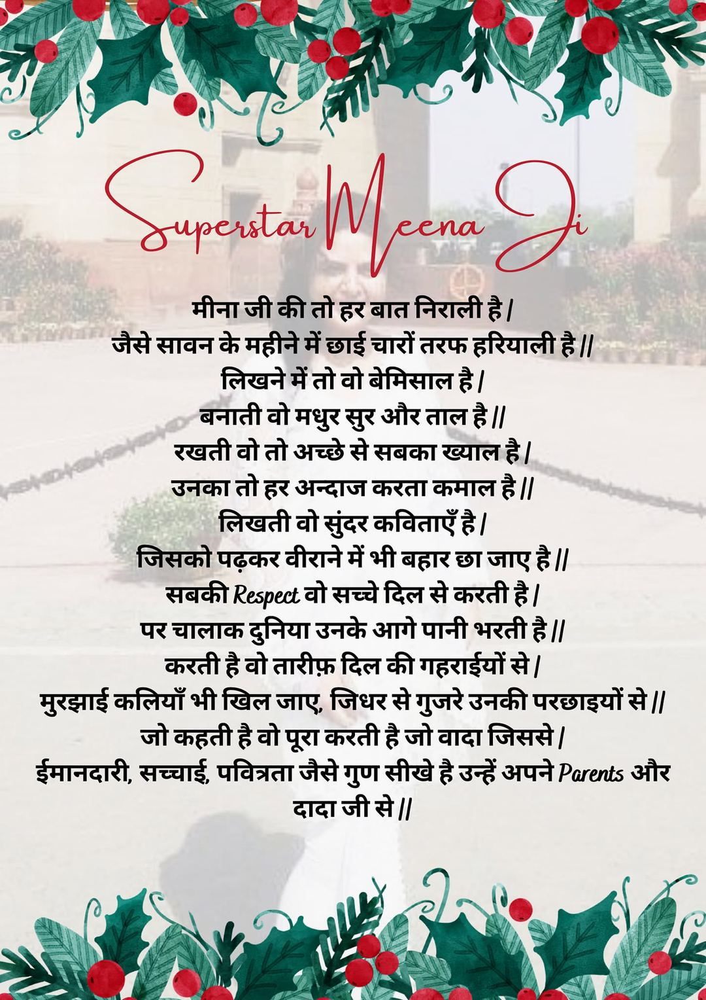
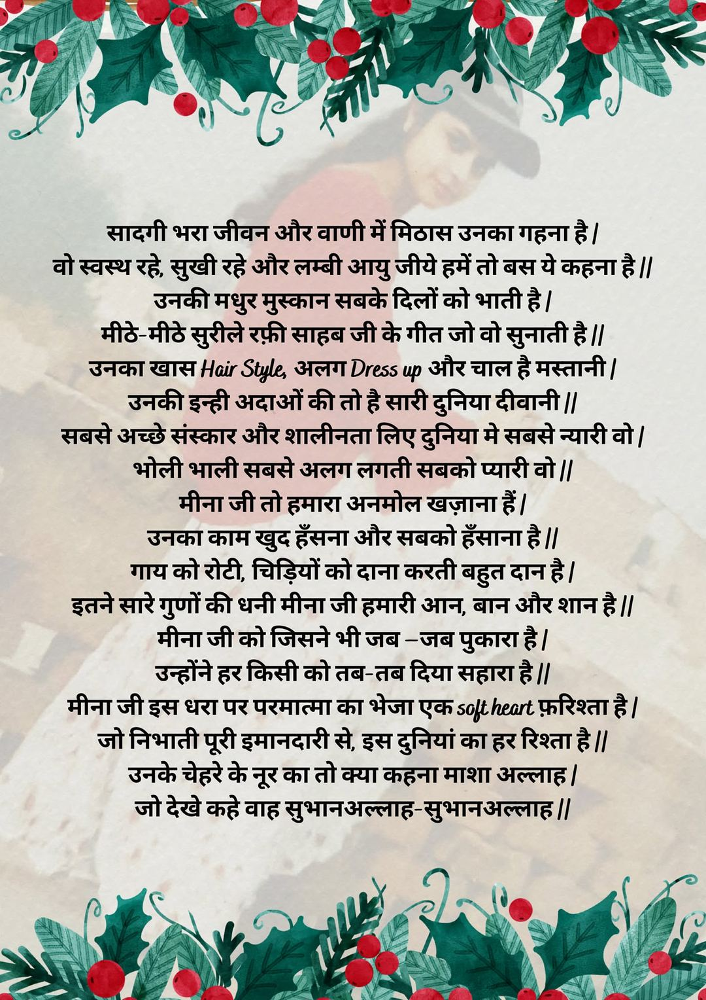
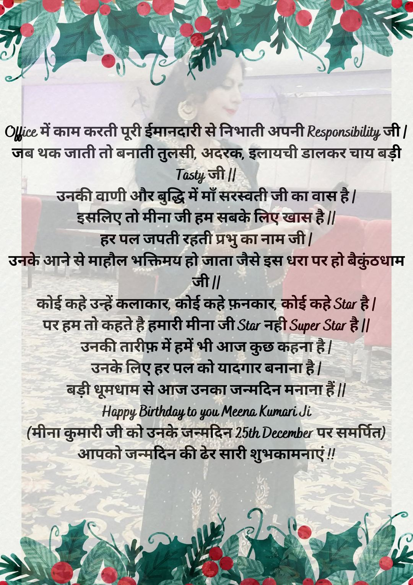

Superstar Meena Ji



रचना का पाठ
मीना जी की तो हर बात निराली है |
जैसे सावन के महीने में छाई चारों तरफ हरियाली है ||
लिखने में तो वो बेमिसाल है |
बनाती वो मधुर सुर और ताल है ||
रखती वो तो अच्छे से सबका ख्याल है |
उनका तो हर अन्दाज करता कमाल है ||
लिखती वो सुंदर कविताएँ है |
जिसको पढ़कर वीराने में भी बहार छा जाए है ||
सबकी Respect वो सच्चे दिल से करती है |
पर चालाक दुनिया उनके आगे पानी भरती है ||
करती है वो तारीफ़ दिल की गहराईयों से |
मुरझाई कलियाँ भी खिल जाए, जिधर से गुजरे उनकी परछाइयों से ||
जो कहती है वो पूरा करती है जो वादा जिससे |
ईमानदारी, सच्चाई, पवित्रता जैसे गुण सीखे है उन्हें अपने Parents और
दादा जी से ||
सादगी भरा जीवन और वाणी में मिठास उनका गहना है |
वो स्वस्थ रहे, सुखी रहे और लम्बी आयु जीये हमें तो बस ये कहना है ||
उनकी मधुर मुस्कान सबके दिलों को भाती है |
मीठे-मीठे सुरीले रफ़ी साहब जी के गीत जो वो सुनाती है ||
उनका खास Hair Style, अलग Dress up और चाल है मस्तानी |
उनकी इन्ही अदाओं की तो है सारी दुनिया दीवानी ||
सबसे अच्छे संस्कार और शालीनता लिए दुनिया मे सबसे न्यारी वो |
भोली भाली सबसे अलग लगती सबको प्यारी वो ||
मीना जी तो हमारा अनमोल खज़ाना हैं |
उनका काम खुद हँसना और सबको हँसाना है ||
गाय को रोटी, चिड़ियों को दाना करती बहुत दान है |
इतने सारे गुणों की धनी मीना जी हमारी आन, बान और शान है ||
मीना जी को जिसने भी जब –जब पुकारा है |
उन्होंने हर किसी को तब-तब दिया सहारा है ||
मीना जी इस धरा पर परमात्मा का भेजा एक soft heart फ़रिश्ता है |
जो निभाती पूरी इमानदारी से, इस दुनियां का हर रिश्ता है ||
उनके चेहरे के नूर का तो क्या कहना माशा अल्लाह |
जो देखे कहे वाह सुभानअल्लाह-सुभानअल्लाह ||
Office में काम करती पूरी ईमानदारी से निभाती अपनी Responsibility जी |
जब थक जाती तो बनाती तुलसी, अदरक, इलायची डालकर चाय बड़ी
Tasty जी ||
उनकी वाणी और बुद्धि में माँ सरस्वती जी का वास है |
इसलिए तो मीना जी हम सबके लिए खास है ||
हर पल जपती रहती प्रभु का नाम जी |
उनके आने से माहौल भक्तिमय हो जाता जैसे इस धरा पर हो बैकुंठधाम
जी ||
कोई कहे उन्हें कलाकार, कोई कहे फ़नकार, कोई कहे Star है |
पर हम तो कहते है हमारी मीना जी Star नही Super Star है ||
उनकी तारीफ़ में हमें भी आज कुछ कहना है |
उनके लिए हर पल को यादगार बनाना है |
बड़ी धूमधाम से आज उनका जन्मदिन मनाना हैं ||
Happy Birthday to you Meena Kumari Ji
(मीना कुमारी जी को उनके जन्मदिन 25th December पर समर्पित)
आपको जन्मदिन की ढेर सारी शुभकामनाएं !!
💁🏻♀️For a long time, I have been writing on lots of topics and for a lots of people too. So, I had this wish that someone wrote for me as well. Finally, God❤ fulfilled my long standing wish and someone wrote a poem for me. Thankyou so much God for fulfilling my wish and also to that person🤗 who wrote this beautiful poem for me.